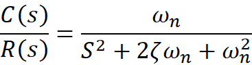
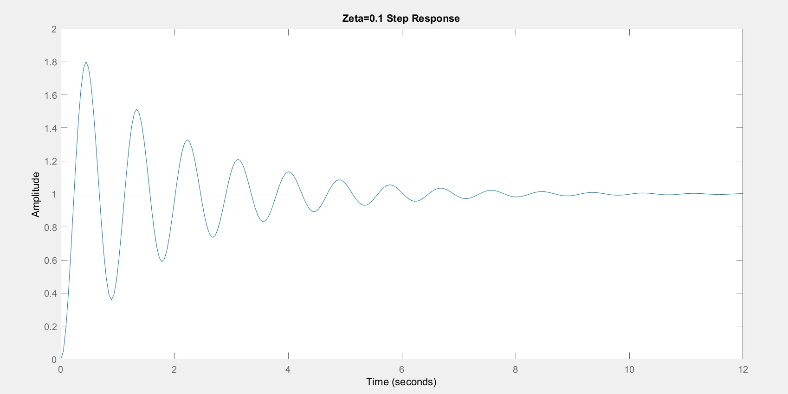
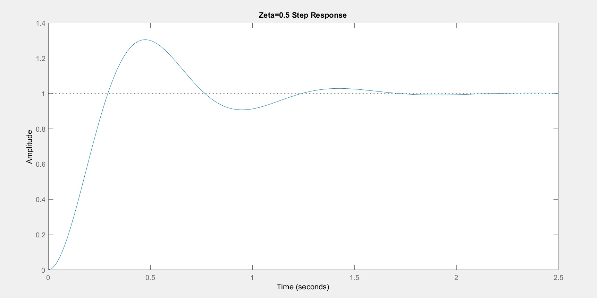
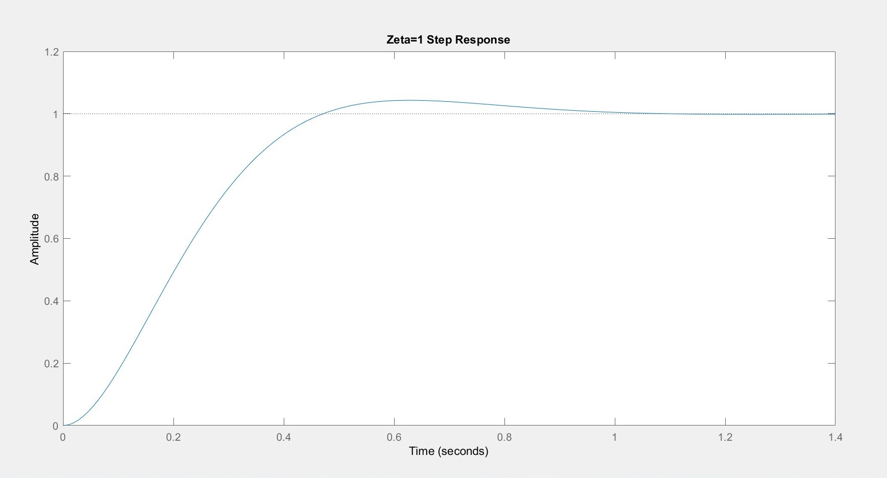
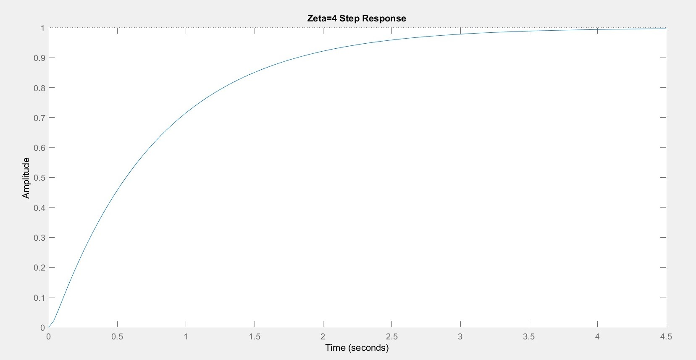
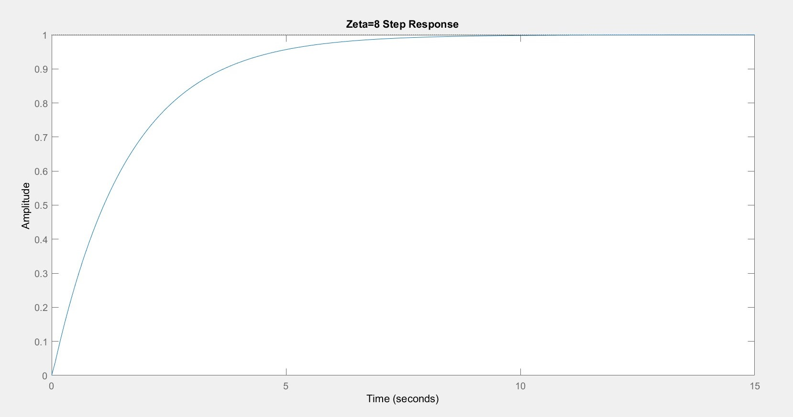

For the different values of zeta(ξ) accordingly time response is plotted for the given equation:
T(s)=(100)÷(s2+20ξ+100)
Comparing it with the general equation we get:
----------->(general equation)
ω
n2=100
ω
n=10 (as the ω
n cannot be zero)
When ξ=0.1

Thus ξ< 1 ,i.e. case of under-damped condition. So, the time response of the second order system is having damped oscillations (decreasing amplitude) when ‘δ’ lies between zero and one. An underdamped response is one that oscillates within a decaying envelope. The more underdamped the system, the more oscillations and longer it takes to reach steady-state.
When ξ=0.5

Thus ξ< 1 ,i.e. case of under-damped condition. So, the time response of the second order system is having damped oscillations (decreasing amplitude) when ‘δ’ lies between zero and one.An underdamped response is one that oscillates within a decaying envelope. The more underdamped the system, the more oscillations and longer it takes to reach steady-state.
When ξ=1

Thus ξ=1, i.e. case of critically-damped condition.So,the time response of the second order system is moving slowly towards equilibrium position(with no overshoot)A critically damped response is that response which reaches the steady-state value the fastest without being underdamped. .The transition between overdamped and under damped is known as critically damped.
When ξ=4

Thus ξ>1, i.e. the case of over damped condition.An overdamped response is the response that does not oscillate about the steady-state value but takes longer to reach steady-state than the critically damped case.
When ξ=8

Thus ξ>1, i.e. the case of over damped condition.An overdamped response is the response that does not oscillate about the steady-state value but takes longer to reach steady-state than the critically damped case.
Conclusion
As we demonstrated by looking at observation , we conclude that graph of step response of second order system changes accordingly with the different value of zeta. Following the above data when the value of zeta lies between (0-1). It is underdamped condition and when its value is 1 ,it is critically damped condition. And when its value is greater than 1 , it is over damped condition